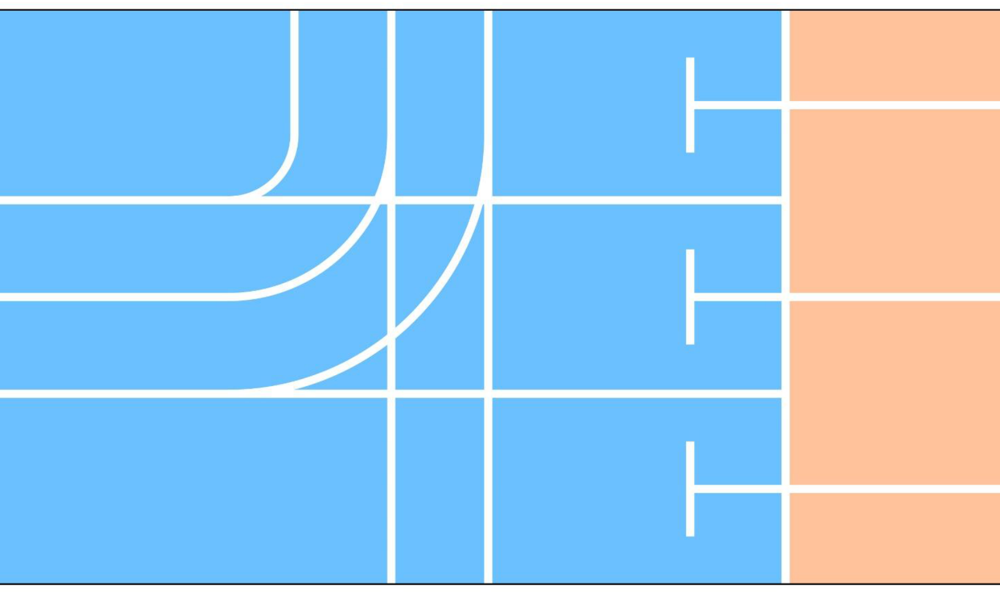
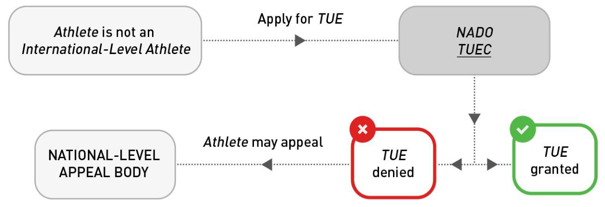
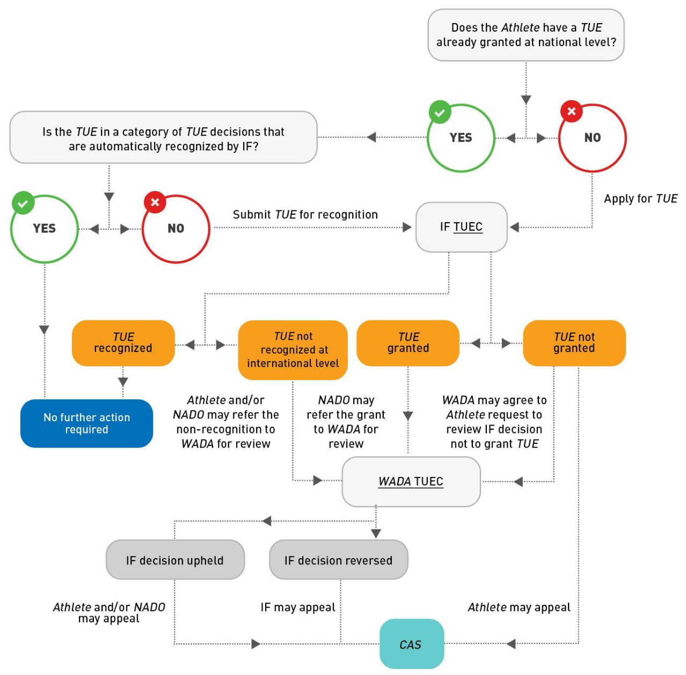
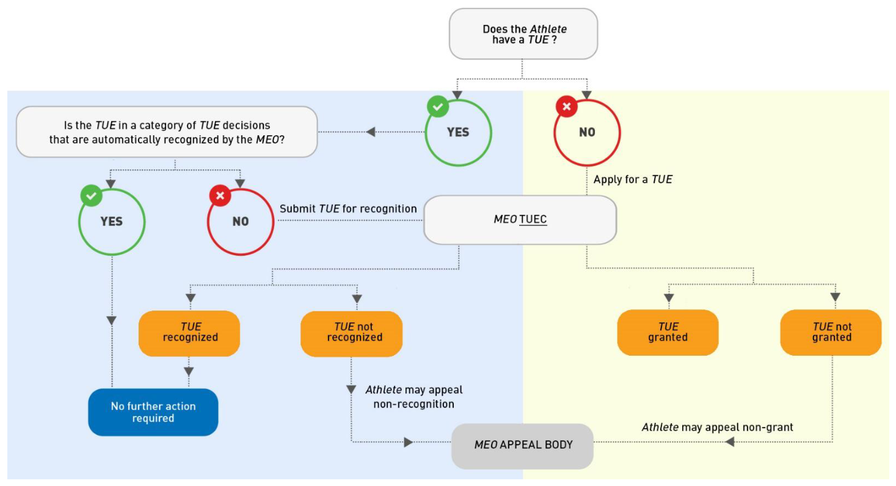

International Standards · ISTUE
Edition 2027 · effective 1 January 2027 · current
Retrieved on 26 November 2026 from https://www.wada-ama.org/sites/default/files/2025-12/2027_international_standard_for_therapeutic_use_exemptions_istue.pdf
Editions: 2027 (current) · 2023 · 2021 · 2019 · 2016 · 2015 · 2011 (revised January 2012) · 2010 · 2009
p. 1
International Standard for Therapeutic Use Exemptions

p. 2
The World Anti-Doping Code International Standard for Therapeutic Use Exemptions is a mandatory International Standard developed as part of the World Anti-Doping Program. It was developed in consultation with Signatories, public authorities, Athletes, and other relevant stakeholders.
The International Standard for Therapeutic Use Exemptions was first adopted in 2004 and came into effect on 1 January 2005. It was subsequently amended eight times, the first effective January 2009, the second effective January 2010, the third effective January 2011, the fourth effective January 2015, the fifth effective January 2016, the sixth effective January 2019, the seventh effective January 2021, the eighth effective January 2023. This revised version was approved by the WADA Executive Committee on 5 December 2025 and is effective as of 1 January 2027.
Published by:
World Anti-Doping Agency Stock Exchange Tower 800 Place Victoria (Suite 1700) PO Box 120 Montreal, Quebec, Canada H3C 0B4
www.wada-ama.org
Tel:
Fax:
-
1 514 904 9232
-
1 514 904 8650
E-mail: code@wada-ama.org
p. 3
p. 4
PART ONE: INTRODUCTION, CODE PROVISIONS, AND INTERPRETATION
1.0 Introduction and Scope
The International Standard for Therapeutic Use Exemptions is a mandatory International Standard developed as part of the World Anti-Doping Program.
The purpose of the International Standard for Therapeutic Use Exemptions is to establish (a) the criteria that shall be satisfied in order for a Therapeutic Use Exemption (or TUE) to be granted, permitting the presence of a Prohibited Substance in an Athlete's Sample or the Athlete's Use or Attempted Use, Possession and/or Administration or Attempted Administration of a Prohibited Substance or Prohibited Method for Therapeutic reasons; (b) the responsibilities imposed on Anti-Doping Organizations regarding their TUE program; (c) the process for an Athlete to apply for a TUE; (d) the process for an Athlete to get a TUE granted by one Anti-Doping Organization recognized by another Anti-Doping Organization; (e) the process for WADA to review TUE decisions; and (f) the strict confidentiality provisions that apply to the TUE process.
2.0 Code Provisions
The following Articles in the Code are directly relevant to the International Standard for Therapeutic Use Exemptions; they can be obtained by referring to the Code itself:
- Code Article 4.4 Therapeutic Use Exemptions
- Code Article 10.2.4 Therapeutic Use Exemption Criteria
- Code Article 13.4 Appeals Relating to TUEs
- Code Article 14.5.2 Doping Control Information Database and Monitoring of Compliance
3.0 Interpretation
The official text of the International Standard for Therapeutic Use Exemptions will be published in English and French. In the event of any conflict between the English and French versions, the English version will prevail.
Like the Code, the International Standard for Therapeutic Use Exemptions has been drafted giving consideration to the principles of proportionality, human rights, and other applicable legal principles. It will be interpreted and applied in that light.
The comments annotating various provisions of the International Standard for Therapeutic Use Exemptions will be used to guide its interpretation.
Unless otherwise specified, references to Articles or the Annex are references to Articles or the Annex of the International Standard for Therapeutic Use Exemptions.
Where the term "days" is used in the International Standard for Therapeutic Use Exemptions, it shall mean calendar days (i.e., all of the days of the week, including any non-working days) unless otherwise specified.
Terms used in this International Standard that are defined terms from the Code are italicized. Terms that are defined in this or another International Standard are underlined.
p. 5
Defined terms from the Code and International Standards that are used in the International Standard for Therapeutic Use Exemptions are found in Appendix 1.
The Annex and Appendix to the International Standard for Therapeutic Use Exemptions have the same mandatory status as the rest of the International Standard.
The following terms used in the International Standard for Therapeutic Use Exemptions shall be interpreted as indicated:
- "Shall" to indicate a mandatory requirement.
- "Should" to indicate a recommendation.
p. 6
PART TWO: STANDARDS AND PROCESS FOR GRANTING TUES
4.0 Criteria for obtaining a TUE
4.1 An Athlete who needs to Use a Prohibited Substance or Prohibited Method for Therapeutic reasons shall apply for and obtain a TUE prior to Using or Possessing the substance or method in question, unless the Athlete is entitled to apply for a TUE retroactively under Article 4.3 or has another acceptable justification for Possession in accordance with Code Article 2.6. Whether applying in advance or retroactively under Article 4.3, in both cases the Article 4.2 criteria shall be satisfied.
[Comment to Article 4.1: There may be situations where an Athlete has a medical condition and is Using or Possessing a Prohibited Substance or Prohibited Method prior to becoming subject to anti-doping rules. In that case, such prior Use/Possession does not require a TUE, and a prospective TUE will be sufficient.
If an Athlete is not granted a retroactive TUE in the context of proceedings for an anti-doping rule violation, Code Article 10.2.4 should also be considered in relation to any period of Ineligibility to be imposed.]
4.2 An Athlete may be granted a TUE if (and only if) they can show, on the balance of probabilities, that each of the following criteria is met:
Cited by 1
a) The Athlete has a diagnosed medical condition supported by relevant clinical evidence.
b) The Prohibited Substance or Prohibited Method is an indicated treatment for the medical condition, and there is no reasonable permitted Therapeutic alternative.
[Comment to Articles 4.2(a) and (b): The Use of the Prohibited Substance or Prohibited Method may be part of a necessary diagnostic investigation rather than a treatment per se.]
[Comment to Article 4.2(b): An indicated treatment and considerations of reasonable permitted alternative(s) could be based on factors such as evidence-based guidelines, side-effect profiles or other medical justifications, including, where applicable, geographically specific medical practice, and the ability to access the medication. It may not be necessary to try and fail alternatives before using the Prohibited Substance or Prohibited Method.]
c) The Therapeutic Use of the Prohibited Substance or Prohibited Method will not, on the balance of probabilities, produce any additional enhancement of performance beyond what might be anticipated by a return to the Athlete's normal state of health following the treatment of the medical condition.
[Comment to Article 4.2(c): An Athlete's normal state of health will need to be determined on an individual basis. A normal state of health for a specific Athlete is their state of health but for the medical condition for which the Athlete is seeking a TUE.]
d) The necessity for the Use of the Prohibited Substance or Prohibited Method is not a consequence, wholly or in part, of the prior Use (without a TUE) of a substance or method which was prohibited at the time of such Use.
[Comment to Article 4.2: The ISTUE Guidelines - Medical Information for TUEs, available on WADA's website, should be used to assist in the application of these criteria in relation to particular medical conditions.
The granting of a TUE is based solely on consideration of the criteria set out in Article 4.2. It does not consider whether the Prohibited Substance or Prohibited Method is the most clinically appropriate or safe, or whether its Use is legal in all jurisdictions.
When an International Federation or Major Event Organization Therapeutic Use Exemption Committee (TUEC) is deciding whether or not to recognize a TUE granted by another Anti-Doping Organization (see Article 7), and when WADA is reviewing a decision to grant (or not to grant) a TUE (see Article 8), the issue will be the same as it is for a TUEC that is considering an application for a TUE under Article 6, i.e., has the Athlete demonstrated on the balance of probabilities that each of the criteria set out in Article 4.2 is met?]
p. 7
4.3 A retroactive TUE provides an Athlete the opportunity to apply for a TUE for a Prohibited Substance or Prohibited Method after Using or Possessing the substance or method in question.
An Athlete may apply retroactively for a TUE (but shall still meet the criteria in Article 4.2) if any one of the following exceptions applies:
a) Emergency or urgent treatment of a medical condition was necessary;
b) There was insufficient time, opportunity or exceptional circumstances that resulted in the Athlete not being able to obtain a TUE prior to Using or Possessing the substance or method in question;
c) Due to national level prioritization of certain sports or disciplines, the Athlete's National Anti-Doping Organization did not permit or require the Athlete to apply for a prospective TUE (see Article 5.2(d));
d) If an Anti-Doping Organization chooses to collect a Sample from an Athlete who is not an International-Level Athlete or National-Level Athlete, and that Athlete is Using a Prohibited Substance or Prohibited Method for Therapeutic reasons, the Anti-Doping Organization shall permit the Athlete to apply for a retroactive TUE; or
e) The Athlete Used Out-of-Competition, for Therapeutic reasons, a Prohibited Substance that is only prohibited In-Competition.
[Comment to Article 4.3(c), (d) and (e): Such Athletes are strongly advised to have a medical file prepared and ready to demonstrate their satisfaction of the TUE criteria set out at Article 4.2, in case an application for a retroactive TUE is necessary following Sample collection.]
[Comment to Article 4.3(e): This seeks to address situations where, for Therapeutic reasons, an Athlete Uses a substance Out-of-Competition that is only prohibited In-Competition, but there is a risk that the substance will remain in their system In-Competition. In such situations, the Anti-Doping Organization shall permit the Athlete to apply for a retroactive TUE (where the Athlete has not applied in advance). This also seeks to prevent Anti-Doping Organizations from having to assess advance TUE applications that may not be necessary.]
[Comment to Article 4.3: The fulfillment of one of the retroactive exceptions does not mean that a TUE will necessarily be granted; it means that the Athlete's application may be evaluated under Article 4.2 to determine if the specified TUE criteria have been satisfied.]
p. 8
4.4 In exceptional circumstances and notwithstanding any other provision in the International Standard for Therapeutic Use Exemptions, an Athlete may apply for and be granted a retroactive TUE for their Therapeutic Use of a Prohibited Substance or Prohibited Method if, considering the purpose of the Code, it would be manifestly unfair not to grant a retroactive TUE. For International-Level Athletes and National-Level Athletes, an Anti-Doping Organization may grant an Athlete's application for a retroactive TUE pursuant to this Article only with the prior approval of WADA (and WADA may in its absolute discretion agree with or reject the Anti-Doping Organization's decision).
For Athletes who are not International-Level Athletes or National-Level Athletes, the relevant Anti-Doping Organization may grant an Athlete's application for a retroactive TUE pursuant to this Article without first consulting WADA; however, WADA may at any time review an Anti-Doping Organization's decision to grant a retroactive TUE pursuant to this Article, and may in its absolute discretion, agree with or reverse the decision.
Any decision made by WADA and/or an Anti-Doping Organization under this Article may not be challenged either as a defense to proceedings for an anti-doping rule violation, or by way of appeal, or otherwise.
[Comment to Article 4.4: For the avoidance of doubt, retroactive approval may be granted under Article 4.4 even if the criteria in Article 4.2 are not met (although satisfaction of such criteria will be a relevant consideration). Other relevant factors might include, without limitation, the reasons why the Athlete did not apply in advance; the Athlete's experience; the Education previously received by the Athlete; whether the Athlete declared the Use of the substance or method on the Doping Control form; and the recent expiration of the Athlete's TUE.]
4.5 In assessing the above criteria:
a) The criteria set out in Article 4.2 shall be assessed by a TUEC.
b) The criteria set out in Article 4.3(a) shall be assessed by the relevant Anti-Doping Organization in consultation with a member(s) of a TUEC.
c) The criteria set out in Articles 4.3(b) to (e) shall be assessed by the relevant Anti-Doping Organization, which may at its discretion consult with an appropriate medical or scientific expert(s) (for example, a member(s) of a TUEC or a member(s) of staff).
d) The criteria set out in Article 4.4 shall be assessed by the relevant Anti-Doping Organization in consultation with an appropriate medical or scientific expert(s) (for example, a member(s) of a TUEC or a member(s) of staff).
5.0 TUE Responsibilities of Anti-Doping Organizations
5.1 Each Anti-Doping Organization shall establish a clear process for applying for a TUE that complies with the requirements of this International Standard.
[Comment to Article 5.1: Annex A contains flowcharts summarizing the key TUE procedures for National Anti-Doping Organizations, International Federations and Major Event Organizations, including who has authority to make TUE decisions, recognition of such decisions, and rights of review/appeal (as set out in Code Article 4.4 and the International Standard for Therapeutic Use Exemptions).]
p. 9
5.2 Each Anti-Doping Organization shall publish the following information in a conspicuous place on its website that is easily accessible to all Athletes and stakeholders:
a) Details of its TUE application process, including clearly setting out which Athletes are required to apply to it for a TUE, and when.
b) The TUE application form (or alternative application method). If an application form is used, it shall be based on the template available on WADA's website. The template may be modified by Anti-Doping Organizations to include additional requests for information, but no sections or items may be removed. The template may be translated into other languages by Anti-Doping Organizations, but certain elements of the original English or French text shall remain on the form, as set out in the template.
c) For each National Anti-Doping Organization, its definition of National-Level Athlete.
d) For National Anti-Doping Organizations, where national policy requirements and imperatives lead a National Anti-Doping Organization to prioritize certain sports or disciplines over others in its test distribution planning (as contemplated by Article 4.4.1 of the International Standard for Testing), the National Anti-Doping Organization may decline to consider advance applications for TUEs from Athletes in some or all of the non-priority sports or disciplines (but in that case it shall permit any such Athlete from whom a Sample is subsequently collected to apply for a retroactive TUE in accordance with Article 4.3(c)). The National Anti-Doping Organization shall clearly set out on its website which Athletes are not required to apply for a TUE in advance under any such policy.
e) For each International Federation, a clear definition of International-Level Athlete and a clear definition/list of International Events, so that Athletes can understand their TUE obligations.
f) For each International Federation and (where applicable) Major Event Organization that was granted an exception to automatic recognition under Article 7.2(b): (1) which TUE decisions of other Anti-Doping Organizations it will automatically recognize (if any); and (2) which TUE decisions of other Anti-Doping Organizations will have to be submitted to it by the Athlete for evaluation.
5.3 Each National Anti-Doping Organization, International Federation and (where applicable) Major Event Organization shall establish a TUEC to consider whether applications for grant or recognition of TUEs meet the criteria set out in Article 4.2. In particular:
a) A pool of potential TUEC members may be established, from which TUECs can be selected for specific applications.
b) A TUEC may seek the assistance of such other medical or scientific experts as it deems appropriate.
c) A TUEC considering a specific application should include at least three (3) physicians with experience in the care and treatment of Athletes and a sound p. 10 knowledge of clinical, sports and exercise medicine. In cases where specific expertise is required (for example, for Athletes with impairments where the substance or method pertains to the Athlete's impairment), at least one (1) TUEC member or expert should possess such expertise. One (1) physician member shall act as chair of the TUEC.
d) Decisions should ideally be reached through consensus of the TUEC, with further input from other physicians and/or experts, if necessary. If consensus cannot be reached, a majority decision will be made.
e) In order to ensure impartiality of decisions, all members of the TUEC shall have signed a conflict of interest and confidentiality declaration (a template is available on WADA's website).
5.4 The Anti-Doping Organization and/or TUEC shall decide whether or not to grant the application/recognize the TUE as soon as possible, and usually within no more than twenty-one (21) days of receipt of a complete application/request for recognition. Where a TUE application/request for recognition is made in a reasonable time prior to an Event, the Anti-Doping Organization and/or TUEC shall use its best endeavors to issue its decision before the start of the Event.
5.5 The effective date for a prospective TUE shall be, at the earliest, the date of the TUEC's decision to grant the TUE. Retroactive TUEs do not continue into the future and apply retroactively where an Athlete has already Used or Possessed the Prohibited Substance or Prohibited Method in question.
[Comment to Article 5.5: For example, where an Athlete is applying to renew an existing TUE, the effective date for the new TUE may be a date in the future (so that the new TUE comes into effect after the expiry of the existing TUE).
An Anti-Doping Organization may grant a prospective TUE in conjunction with a retroactive TUE, and vice versa.]
5.6 Each TUE shall have a specified duration, as decided by the TUEC, at the end of which the TUE will expire automatically. The duration of the TUE should generally reflect the duration of treatment. The duration of any TUE shall not exceed ten (10) years.
[Comment to Article 5.6: Where applicable, the duration of the TUE should be aligned with the ISTUE Guidelines - Medical Information for TUEs.]
5.7 The Anti-Doping Organization and/or TUEC shall notify the Athlete of its decision in writing. A decision not to grant or not to recognize a TUE shall include a clear explanation of the reason(s) for the decision, and notification of the Athlete's rights of review and appeal (if applicable).
5.8 If an International Federation either grants a TUE or refuses to recognize a TUE from a National Anti-Doping Organization, the International Federation shall also notify the Athlete's National Anti-Doping Organization of its decision.
p. 11
5.9 Each National Anti-Doping Organization, International Federation and Major Event Organization shall promptly report (in English or French) all decisions granting or denying TUEs, and all decisions to recognize or refusing to recognize other Anti-Doping Organizations' TUE decisions, through ADAMS as soon as possible and in any event within twenty-one (21) days of receipt of the decision. In respect of TUEs denied/not recognized, the information reported shall include a clear explanation of the reason(s) for the decision. In respect of TUEs granted, the information reported shall include:
a) Whether the Athlete was permitted to apply for a TUE retroactively under Article 4.3 and a clear explanation of the reason(s) why, or whether the Athlete was permitted to apply for and was granted a TUE retroactively under Article 4.4 and a clear explanation of the reason(s) why;
b) The approved substance or method, the dosage(s), frequency, route of administration permitted, the duration of the TUE, and any conditions imposed in connection with the TUE; and
c) The TUE application form (if not completed electronically in ADAMS) and the relevant clinical information establishing that the Article 4.2 criteria have been satisfied in respect of such TUE (for access only by WADA, the Athlete's National Anti-Doping Organization and International Federation, and the Major Event Organization organizing an Event in which the Athlete wishes to compete).
[Comment to Article 5.9: The content of the TUE application form shall be provided in English or French. The full medical file, including diagnostic tests, laboratory results and values shall be provided, but need not be translated into English or French. However, a translated summary of all the key information (including key diagnostic tests) shall be entered into ADAMS, with sufficient information to clearly establish the diagnosis. It is strongly suggested that the summary be prepared by a physician or other person with adequate medical knowledge, in order to properly understand and summarize the medical information. More detailed/full translations may be required by the relevant Anti-Doping Organization or WADA, upon request.]
5.10 The Anti-Doping Organization that granted the TUE shall be responsible for the ongoing monitoring of any conditions imposed in relation to the TUE, unless agreed otherwise by the relevant Anti-Doping Organizations. This remains the case whether or not the TUE is then recognized by another Anti-Doping Organization under Article 7.0.
5.11 When a National Anti-Doping Organization grants a TUE to an Athlete, it shall warn them in writing that (a) the TUE is valid at national level only, and (b) if the Athlete becomes an International-Level Athlete or competes in an International Event, or becomes subject to the TUE requirements of a Major Event Organization, that TUE will not be valid for those purposes unless it is recognized by the relevant International Federation or Major Event Organization in accordance with Article 7.0. The National Anti-Doping Organization should help the Athlete to determine whether they need to submit the TUE to an International Federation or Major Event Organization for recognition, or whether the TUE is automatically recognized. The National Anti-Doping Organization should guide and support the Athlete through the recognition process.
p. 12
5.12 In relation to appeals of TUE decisions other than pursuant to Article 4.4:
a) If a National Anti-Doping Organization denies a TUE application, the Athlete may appeal exclusively to the national-level appeal body as set out in Code Article 4.4.2.
b) Any TUE decision by an International Federation that is not reviewed by WADA, or that is reviewed by WADA but is not reversed upon review, may be appealed by the Athlete and/or the Athlete's National Anti-Doping Organization exclusively to CAS, as set out in Code Article 4.4.7.
c) A decision by WADA to reverse a TUE decision may be appealed by the Athlete, the National Anti-Doping Organization and/or the International Federation affected exclusively to CAS, as set out in Code Article 4.4.8.
d) A decision by a Major Event Organization not to recognize or not to grant a TUE may be appealed by the Athlete exclusively to an independent body established or appointed by the Major Event Organization as set out in Code Article 4.4.4.3.
6.0 TUE Application Process
6.1 An Athlete who needs a TUE should apply to the appropriate Anti-Doping Organization as soon as possible online or using the TUE application form provided.
6.2 Athletes who are not International-Level Athletes shall apply to their National Anti-Doping Organization for a TUE.
[Comment to Article 6.2: In certain situations, an Athlete may not know which National Anti-Doping Organization they should apply to for a TUE. In such circumstances, the Athlete should consult the National Anti-Doping Organization of the country of the sport organization for which they compete (or with which they are a member or license holder), to determine if they fall within that National Anti-Doping Organization's TUE jurisdiction, according to their rules.
If that National Anti-Doping Organization refuses to evaluate the TUE application because the Athlete does not fall within its TUE jurisdiction, the Athlete should consult the anti-doping rules of the National Anti-Doping Organization of the country in which they reside (if different).
If the Athlete still does not fall within that National Anti-Doping Organization's TUE jurisdiction, the Athlete should then consult the anti-doping rules of the National Anti-Doping Organization of their country of citizenship (if different from where they compete or reside).
Athletes may contact any of the above-referenced National Anti-Doping Organizations for assistance with determining whether the National Anti-Doping Organization has TUE jurisdiction. In the event that none of the above-mentioned National Anti-Doping Organizations have TUE jurisdiction, where there is an Adverse Analytical Finding, the Athlete should ordinarily be permitted to apply for a retroactive TUE from the Anti-Doping Organization that has Results Management authority. See also the summary flowcharts on where to apply in the Guidelines for the International Standard for Therapeutic Use Exemptions.
In case of dispute as to which National Anti-Doping Organization should deal with the TUE application of an Athlete who is not an International-Level Athlete, WADA will decide. WADA's decision will be final and not subject to appeal]
p. 13
6.3 Athletes who are International-Level Athletes shall apply to their International Federation. However, where the Athlete already has a TUE granted by their National Anti-Doping Organization, they should not submit an application for a new TUE to the International Federation but the existing TUE will need to be recognized by the International Federation in accordance with Article 7.0.
6.4 As per Code Article 4.4.4, a Major Event Organization may require Athletes to apply to it for a TUE if they wish to Use a Prohibited Substance or a Prohibited Method in connection with the Event. If a TUE is granted by a Major Event Organization it is effective for its Event only. Where the Athlete already has a TUE granted by their National Anti-Doping Organization or International Federation, they should not submit an application for a new TUE to the Major Event Organization but the existing TUE will need to be recognized by the Major Event Organization in accordance with Article 7.0.
6.5 The Athlete's TUE application shall be accompanied by a comprehensive medical history, including documentation from the original diagnosing physician(s) (where possible) and the results of all relevant examinations, laboratory investigations and imaging studies. The application form shall include a physician's signature (which may be electronic) in the designated area.
[Comment to Article 6.5: The information submitted in relation to the diagnosis and treatment should be guided by the relevant ISTUE Guidelines - Medical Information for TUEs available on WADA's website.]
6.6 A TUE application will only be assessed following the receipt of a properly completed application, accompanied by all relevant documents. Incomplete applications will be returned to the Athlete for completion and re-submission. If the Athlete fails to respond to the Anti-Doping Organization within a reasonable timeframe following notification of the requirement for additional information, the Anti-Doping Organization may cancel the TUE application.
6.7 The Anti-Doping Organization and/or TUEC may request from the Athlete or their physician any additional information, examinations or imaging studies, or other information that it deems necessary in order to consider the Athlete's application.
6.8 The Athlete should keep a complete copy of the TUE application and of all materials and information submitted to their Anti-Doping Organization.
6.9 Any costs incurred by the Athlete in making the TUE application and in supplementing it as required by the Anti-Doping Organization and/or TUEC are the responsibility of the Athlete.
6.10 In the event that, after their TUE is granted, the Athlete requires a different dosage, frequency, route or duration of administration of the Prohibited Substance or Prohibited Method to that specified in the TUE, they shall contact the relevant Anti-Doping Organization, who will then determine whether the Athlete needs to apply for a new TUE.
[Comment to Article 6.10: It is recognized that for certain medical conditions, dosages may fluctuate, particularly during the early stages of the establishment of a treatment regime or for a condition such as insulin-dependent diabetes. Such potential fluctuations should be accounted for in the TUE approval by providing a dosage range/upper limit. For further details refer to the relevant ISTUE Guidelines - Medical Information for TUEs, where available. However, in the event of a change that is not accounted for in the TUE, the Athlete shall contact the relevant Anti-Doping Organization to determine whether a new TUE is required.]
p. 14
6.11 If the Athlete needs to continue to Use the Prohibited Substance or Prohibited Method after the expiry date of their TUE, they shall submit an application for a new TUE well in advance of that expiry date, so that there is sufficient time for a decision to be made on the application before the expiry date.
6.12 A TUE will be withdrawn by the TUEC prior to expiry if (a) the Athlete does not promptly comply with any requirements or conditions imposed by the Anti-Doping Organization granting the TUE, and/or (b) due to a change in circumstances the TUE criteria are no longer met.
6.13 An Athlete may be granted more than one TUE for different treatments or medical conditions. However, an Athlete may not apply to more than one (1) Anti-Doping Organization for a TUE for the Use of the same Prohibited Substance or Prohibited Method for the same medical condition. Nor may an Athlete have more than one (1) TUE at a time for the Use of the same Prohibited Substance or Prohibited Method for the same medical condition (and any such new TUE will supersede the previous TUE, which should be cancelled by the relevant Anti-Doping Organization).
6.14 Where an Adverse Analytical Finding is issued after a TUE for the Prohibited Substance in question has expired or has been withdrawn or reversed, the Anti-Doping Organization conducting the initial review of the Adverse Analytical Finding, in accordance with Article 5.1.1.1 of the International Standard for Results Management, shall consider whether the finding is consistent with Use of the Prohibited Substance prior to the expiry, withdrawal or reversal of the TUE. If so, such Use (and any resulting presence of the Prohibited Substance in the Athlete's Sample) is not an anti-doping rule violation.
6.15 If the presence, Use, Possession or Administration of a Prohibited Substance or Prohibited Method is not consistent with the terms of the TUE granted, the fact that the Athlete has the TUE will not prevent the finding of an anti-doping rule violation.
6.16 If a National Anti-Doping Organization grants a TUE to an Athlete and the Athlete subsequently becomes an International-Level Athlete or competes in an International Event or becomes subject to the TUE requirements of a Major Event Organization, the TUE will not be valid unless and until the relevant International Federation/Major Event Organization recognizes that TUE in accordance with Article 7.0. As a result, if the International Federation or Major Event Organization (as applicable) declines to recognize that TUE, then (subject to the Athlete's rights of review and appeal) that TUE may not be relied upon to excuse the presence, Use, Possession or Administration of the Prohibited Substance or Prohibited Method mentioned in the TUE vis-à-vis that International Federation or Major Event Organization.
p. 15
6.17 If an International Federation grants a TUE to an Athlete and the Athlete then becomes subject to the TUE requirements of a Major Event Organization, the TUE will not be valid for those purposes unless and until the relevant Major Event Organization recognizes that TUE in accordance with Article 7.0. As a result, if the Major Event Organization declines to recognize that TUE, then (subject to the Athlete's rights of review and appeal) that TUE may not be relied upon to excuse the presence, Use, Possession or Administration of the Prohibited Substance or Prohibited Method mentioned in the TUE vis-à-vis that Major Event Organization.
6.18 If an International Federation grants a TUE, the National Anti-Doping Organization has twenty-one (21) days from the notification to refer the matter to WADA for review.
a) If the National Anti-Doping Organization refers the matter to WADA for review, the TUE granted by the International Federation remains valid for international-level Competition and Out-of-Competition Testing (but is not valid for national-level Competition) pending WADA's decision.
b) If the National Anti-Doping Organization does not refer the matter to WADA for review within the deadline, the TUE granted by the International Federation becomes valid for national-level Competition when the twenty-one (21) day review deadline expires.
7.0 TUE Recognition Process
7.1 For the avoidance of doubt, when a National Anti-Doping Organization grants a TUE to an Athlete, that TUE is valid at national level on a global basis and does not need to be formally recognized by other National Anti-Doping Organizations under this Article 7.0 (for example, if an Athlete is granted a TUE by their National Anti-Doping Organization and then trains or competes in the country of another National Anti-Doping Organization, that TUE will be valid if the Athlete is then tested by the other National Anti-Doping Organization).
7.2 Code Article 4.4 requires Anti-Doping Organizations to recognize TUEs granted by other Anti-Doping Organizations that satisfy the Article 4.2 criteria. Therefore, if an Athlete who becomes subject to the TUE requirements of an International Federation or Major Event Organization already has a TUE, they should not submit an application for a new TUE to the International Federation or Major Event Organization. Instead:
a) Unless WADA has granted an exception under Article 7.2(b), all TUE decisions that are made pursuant to Code Article 4.4 and are reported in accordance with Article 5.9 will be automatically recognized by the International Federation or Major Event Organization. In this case the Athlete does not need to take any further action, and the TUE cannot then be subject to further review by the International Federation or Major Event Organization.
b) WADA may, in its discretion, grant an International Federation or Major Event Organization an exception to the default position of automatic recognition. If an exception is granted, the International Federation or Major Event Organization shall publish the following information in accordance with Article 5.2(f): (1) which TUE decisions it will automatically recognize (if any); and (2) which TUE decisions will have to be submitted to it by the Athlete for evaluation. For TUE decisions that p. 16 are automatically recognized, the Athlete does not need to take any further action, and the TUE cannot then be subject to further review by the International Federation or Major Event Organization.
[Comment to Article 7.2(b): An International Federation or Major Event Organization may, for example, decide to review only certain categories of TUE decisions e.g. those relating to particular Prohibited Substances.]
7.3 If an exception to automatic recognition is granted by WADA under Article 7.2(b), the Anti-Doping Organization and/or TUEC may request from the Athlete or their physician any additional information, examinations or imaging studies, or other information that it deems necessary in order to consider the Athlete's request for recognition of the TUE.
7.4 If an exception to automatic recognition is granted by WADA under Article 7.2(b), an International Federation/Major Event Organization may recognize a TUE retroactively (provided the Athlete has demonstrated on the balance of probabilities that each of the criteria set out in Article 4.2 is met).
[Comment to Article 7.4: Retroactive recognition is at the Athlete's own risk as the International Federation/Major Event Organization may decide not to recognize the TUE. In that case the TUE will not be valid for those purposes and may not be relied on to excuse the presence, Use, Possession or Administration of the Prohibited Substance or Prohibited Method mentioned in the TUE vis-à-vis the International Federation or Major Event Organization.]
7.5 Any costs incurred by the Athlete in making the request for recognition of the TUE and in supplementing it as required by the Anti-Doping Organization and/or TUEC are the responsibility of the Athlete.
7.6 If an International Federation who was granted an exception to automatic recognition under Article 7.2(b) refuses to recognize the TUE, the Athlete or the National Anti-Doping Organization will have twenty-one (21) days from the notification to refer the matter to WADA for review:
a) If the matter is referred to WADA for review, the TUE granted by the National Anti-Doping Organization remains valid for national-level Competition and Out-ofCompetition Testing (but is not valid for international-level Competition) pending WADA's decision.
b) If the matter is not referred to WADA for review within the deadline, the Athlete's National Anti-Doping Organization shall determine whether the original TUE granted by that National Anti-Doping Organization should nevertheless remain valid for national-level Competition and Out-of-Competition Testing (provided that the Athlete ceases to be an International-Level Athlete and does not participate in international-level Competition). Pending the National Anti-Doping Organization's decision, the TUE remains valid for national-level Competition and Out-ofCompetition Testing (but is not valid for international-level Competition).
[Comment to Article 7.6: A decision to recognize (or not) a TUE decision is based solely on satisfaction of the Article 4.2 criteria. Accordingly, TUE duration alone is not a reason to deny recognition (unless it relates to satisfaction of the Article 4.2 criteria). Where applicable, TUE duration should be guided by the ISTUE Guidelines - Medical information for TUEs.]
p. 17
7.7 If an International Federation chooses to test an Athlete who is not an International-Level Athlete, it shall recognize a TUE granted by that Athlete's National Anti-Doping Organization unless the Athlete is required to apply for recognition of the TUE pursuant to Articles 5.9 and 7.0, i.e., because the Athlete is competing in an International Event.
8.0 Review of TUE decisions by WADA
8.1 As per Code Article 4.4.6, WADA has the following powers of review, in each case to determine compliance with the Article 4.2 and Article 4.3 criteria:
a) WADA shall review an International Federation's decision not to recognize a TUE granted by a National Anti-Doping Organization that is referred to it by the Athlete or the Athlete's National Anti-Doping Organization.
b) WADA shall review an International Federation's decision to grant a TUE that is referred to it by the Athlete's National Anti-Doping Organization.
c) WADA may review any other TUE decisions at any time, whether upon request by those affected or on its own initiative.
8.2 In relation to the Article 4.2 criteria, WADA shall establish a WADA TUEC that meets the requirements of Article 5.3 to carry out such reviews. In relation to the Article 4.3 criteria, these shall be reviewed by WADA which shall for Article 4.3(a) consult with a member(s) of a WADA TUEC and may at its discretion for Articles 4.3(b) to (e) consult with an appropriate medical or scientific expert(s) (for example, a member(s) of a WADA TUEC, a member(s) of staff or an external expert(s)).
8.3 Each request for review shall be submitted to WADA in writing and shall be accompanied by payment of the application fee established by WADA, as well as copies of all of the information specified in Article 6.5 (or, in the case of review of a TUE denial, all of the information that the Athlete submitted in connection with the original TUE application). The request shall be copied to the Anti-Doping Organization whose decision would be the subject of the review, and to the Athlete (if they are not requesting the review).
8.4 Where the request is for review of a TUE decision that WADA is not obliged to review, WADA shall advise the Athlete as soon as practicable following receipt of the request whether or not it will review the TUE decision. Any decision by WADA not to review the TUE decision is final and may not be appealed. However, the TUE decision may still be appealable, as set out in Code Article 4.4.7.
8.5 On any request for a review, WADA may refer the decision back to the relevant Anti-Doping Organization (a) for clarification (for example, if the reasons are not clearly set out in the decision); and/or (b) for re-consideration by the Anti-Doping Organization (for example, if the TUE was only denied because medical tests or other information required to demonstrate satisfaction of the Article 4.2 criteria were missing).
[Comment to Article 8.5: For example, if an International Federation refuses to recognize a TUE granted by a National Anti-Doping Organization only because medical tests or other information required to demonstrate satisfaction of the Article 4.2 criteria are missing, the matter should not be referred to WADA. Instead, the file should be completed and re-submitted to the International Federation.]
p. 18
8.6 In considering a request for review, WADA and/or the WADA TUEC may seek additional information from the Anti-Doping Organization, the Athlete and/or their physician, including further studies as described in Article 6.7. WADA and/or the WADA TUEC may also obtain the assistance of other medical or scientific experts as it deems appropriate.
8.7 WADA shall reverse any grant of a TUE that does not comply with the Article 4.2 and Article 4.3 criteria (as applicable). Where the TUE reversed was a prospective TUE (rather than a retroactive TUE), such reversal will take effect upon the date specified by WADA (which will not be earlier than the date of WADA's notification to the Athlete). The reversal will not apply retroactively and the Athlete's results prior to such notification will not be Disqualified. Where the TUE reversed was a retroactive TUE, however, the reversal will also be retroactive.
[Comment to Article 8.7: For the avoidance of doubt, when WADA reverses a retroactive TUE, the Athlete no longer has a TUE to cover the presence, Use, Possession or Administration of a Prohibited Substance or Prohibited Method and the Results Management Authority shall continue with or reinitiate Results Management promptly.]
8.8 WADA shall reverse any denial of a TUE where the TUE application met the Article 4.2 and Article 4.3 criteria (as applicable), i.e., it will grant the TUE.
8.9 Where WADA reviews a decision of an International Federation under Article 8.1(a) or (b) (i.e., a mandatory review), it may require whichever Anti-Doping Organization whose position it does not uphold (a) to reimburse the application fee to the party that referred the decision to WADA (if applicable); and/or (b) to pay all/some of the costs incurred by WADA in respect of that review (including WADA TUEC costs, expert fees and internal staff costs), to the extent they are not covered by the application fee.
8.10 Where WADA reverses a TUE decision that WADA has decided in its discretion to review, WADA may require the Anti-Doping Organization that made the decision to pay all/some of the costs incurred by WADA in respect of that review (including WADA TUEC costs, expert fees and internal staff costs).
8.11 WADA shall communicate the reasoned decision of the WADA TUEC promptly to the Athlete, their National Anti-Doping Organization and, where applicable, the International Federation and any Major Event Organization.
9.0 Confidentiality of Information
9.1 The Processing of Personal Information during the TUE process by Anti-Doping Organizations shall comply with the International Standard for Data Protection, including the provisions relating to retention times. Anti-Doping Organizations shall ensure that they have a valid legal authority or basis for such Processing, in accordance with the International Standard for Data Protection and applicable laws.
9.2 Anti-Doping Organizations shall communicate in writing the following information to Athletes as well as any other relevant information in accordance with Article 9 of the International Standard for Data Protection in connection with an Athlete's application for the grant or recognition of a TUE:
a) All information pertaining to the application will be transmitted to members of all
p. 19
TUECs with authority under this International Standard to review the file and, as required, other independent medical or scientific experts, and to all necessary staff (including WADA staff) involved in the management, review or appeal of TUE applications;
b) The Athlete shall authorize their physician(s) to release to any relevant Anti-Doping Organization upon request any health information that any such Anti-Doping Organization deems necessary in order to consider and determine the Athlete's application; and
c) The decision on the application will be made available to all Anti-Doping Organizations with Testing authority and/or Results Management authority over the Athlete.
[Comment to Article 9.2: Where Anti-Doping Organizations are relying upon the Athlete's consent to Process Personal Information in connection with the TUE process, the Athlete applying for the grant or recognition of a TUE shall provide written and explicit consent to the foregoing.]
9.3 The TUE application shall be dealt with in accordance with the principles of strict medical confidentiality. The members of all relevant TUECs, any consulted independent experts and the relevant staff of the Anti-Doping Organization shall conduct all of their activities relating to the process in strict confidence and shall sign appropriate confidentiality agreements. In particular, they shall keep the following information confidential:
a) All medical information provided by the Athlete and physician(s) involved in the Athlete's care; and
b) All details of the application, including the name of the physician(s) involved in the process.
9.4 Should the Athlete wish to revoke the right of an Anti-Doping Organization to obtain any health information on their behalf, the Athlete shall notify their physician in writing of such revocation; provided that, as a result of that revocation, the Athlete's application for a TUE or for recognition of an existing TUE will be deemed withdrawn without approval/recognition having been granted.
9.5 In accordance with the International Standard for Data Protection, Anti-Doping Organizations shall only use information submitted by an Athlete in connection with a TUE application to evaluate the application and in the context of potential anti-doping rule violation investigations and proceedings, and to evaluate the TUE program, including but not limited to identifying trends
p. 20
ANNEX A: CODE ARTICLE 4.4 FLOWCHARTS
- TUE procedure if the Athlete is not an International-Level Athlete when need for TUE arises

- Athlete is not an International-Level Athlete
- Apply for TUE
- NADO TUEC
- NATIONAL-LEVEL APPEAL BODY
- Athlete may appeal
- TUE denied
- TUE granted
p. 21
- TUE procedure if the Athlete is an International-Level Athlete (and thus subject to the International Federation's TUE requirements) when need for TUE arises

- Does the Athlete have a TUE already granted at national level?
- Is the TUE in a category of TUE decisions that are automatically recognized by IF?
- YES
- NO
- Submit TUE for recognition
- Apply for TUE
- YES
- NO
- IF TUEC
- TUE recognized
- TUE not recognized at international level
- TUE granted
- TUE not granted
- No further action required
- Athlete and/or NADO may refer the non-recognition to WADA for review
- NADO may refer the grant to WADA for review
- WADA may agree to Athlete request to review IF decision not to grant TUE
- WADA TUEC
- IF decision upheld
- IF decision reversed
- Athlete and/or NADO may appeal
- IF may appeal
- Athlete may appeal
- CAS
p. 22
3 Athlete enters Event for which Major Event Organization (or "MEO") has its own TUE requirements

- Does the Athlete have a TUE?
- Is the TUE in a category of TUE decisions that are automatically recognized by the MEO?
- YES
- NO
- Apply for a TUE
- YES
- NO
- Submit TUE for recognition
- MEO TUEC
- TUE recognized
- TUE not recognized
- TUE granted
- TUE not granted
- Athlete may appeal non-recognition
- No further action required
- MEO APPEAL BODY
- Athlete may appeal non-grant
p. 23
APPENDIX 1: DEFINITIONS
I. Defined terms from the Code that are used in the International Standard for Therapeutic Use Exemptions
ADAMS: The Anti-Doping Administration and Management System is a Web-based database management tool for data entry, storage, sharing, and reporting designed to assist stakeholders and WADA in their anti-doping operations in conjunction with data protection legislation.
Administration: Providing, supplying, supervising, facilitating, or otherwise participating in the Use or Attempted Use by another Person of a Prohibited Substance or Prohibited Method. However, this definition shall not include the actions of bona fide medical personnel involving a Prohibited Substance or Prohibited Method Used for genuine and legal therapeutic purposes or other acceptable justification and shall not include actions involving Prohibited Substances which are not prohibited in Out-of-Competition Testing unless the circumstances as a whole demonstrate that such Prohibited Substances are not intended for genuine and legal therapeutic purposes or are intended to enhance sport performance.
Adverse Analytical Finding: A report from a *WADA-*accredited laboratory or other WADA-approved laboratory that, consistent with the International Standard for Laboratories, establishes in a Sample the presence of a Prohibited Substance or its Metabolites or Markers or evidence of the Use of a Prohibited Method.
Anti-Doping Organization: WADA or a Signatory that is responsible for adopting rules for initiating, implementing or enforcing any part of the Doping Control process. This includes, for example, the International Olympic Committee, the International Paralympic Committee, other Major Event Organizations that conduct Testing at their Events, International Federations, and National Anti-Doping Organizations.
Athlete: Any Person who competes in sport at the international level (as defined by each International Federation) or the national level (as defined by each National Anti-Doping Organization). An Anti-Doping Organization has discretion to apply anti-doping rules to an Athlete who is neither an International-Level Athlete nor a National-Level Athlete, and thus to bring them within the definition of "Athlete." In relation to Athletes who are neither International-Level nor National-Level Athletes, an Anti-Doping Organization may elect to: conduct limited Testing or no Testing at all; analyze Samples for less than the full menu of Prohibited Substances; require limited or no whereabouts information; or not require advance Therapeutic Use Exemptions. However, if an Article 2.1, 2.3 or 2.5 anti-doping rule violation is committed by any Athlete over whom an Anti-Doping Organization has elected to exercise its authority to test and who competes below the international or national level, then the Consequences set forth in the Code shall be applied. For purposes of Article 2.8 and Article 2.9 and for purposes of anti-doping information and Education, any Person who participates in sport under the authority of any Signatory, government, or other sports organization accepting the Code is an Athlete.
[Comment to Athlete: For the avoidance of doubt, an Anti-Doping Organization may not adopt different rules for such Athletes (including with respect to Therapeutic Use Exemptions) except with respect to the matters explicitly referenced above or as expressly allowed by an International Standard.
Individuals who participate in sport may fall in one of five categories: 1) International-Level Athlete, 2) National-Level Athlete, 3) individuals who are not International or National-Level Athletes but over whom the International Federation or National Anti-Doping Organization has chosen to exercise authority, 4) Recreational Athlete, and 5) individuals over whom no International Federation or National Anti-Doping Organization has, or has chosen to, exercise authority. All International- or National-Level Athletes are subject to the anti-doping rules of the Code, with the precise definitions of international and national level sport to be set forth in the anti-doping rules of the International Federations and National Anti-Doping Organizations.]
p. 24
Attempt: Purposely engaging in conduct that constitutes a substantial step in a course of conduct planned to culminate in the commission of an anti-doping rule violation. Provided, however, there shall be no anti-doping rule violation based solely on an Attempt to commit a violation if the Person renounces the Attempt prior to it being discovered by a third party not involved in the Attempt.
CAS: The Court of Arbitration for Sport.
Code: The World Anti-Doping Code.
Competition: A single race, match, game or singular sport contest. For example, a basketball game or the finals of the Olympic 100-meter race in athletics. For stage races and other sport contests where prizes are awarded on a daily or other interim basis the distinction between a Competition and an Event will be as provided in the rules of the applicable International Federation.
Consequences of Anti-Doping Rule Violations ("Consequences"): An Athlete's or other Person's violation of an anti-doping rule may result in one or more of the following: (a) Disqualification means the Athlete's results in a particular Competition or Event are invalidated, with all resulting Consequences including forfeiture of any medals, points and prizes; (b) Ineligibility means the Athlete or other Person is barred on account of an anti-doping rule violation for a specified period of time from participating in any Competition or other activity or funding as provided in Article 10.14; (c) Provisional Suspension means the Athlete or other Person is barred temporarily from participating in any Competition or activity prior to the final decision at a hearing conducted under Article 8; (d) Financial Consequences means a financial sanction imposed for an anti-doping rule violation or to recover costs associated with an anti-doping rule violation; and (e) Public Disclosure means the dissemination or distribution of information to the general public or Persons beyond those Persons entitled to earlier notification in accordance with Article 14. Teams in Team Sports may also be subject to Consequences as provided in Article 11.
Disqualification: See Consequences of Anti-Doping Rule Violations above.
Education: The process of learning to instill values and develop behaviors that foster and protect the spirit of sport, and to prevent intentional and unintentional doping.
Event: A series of individual Competitions conducted together under one ruling body (e.g., the Olympic Games, World Championships of an International Federation, or Pan American Games).
In-Competition: The period commencing at 11:59 p.m. on the day before a Competition in which the Athlete is scheduled to participate through the end of such Competition and the Sample collection process related to such Competition. Provided, however, WADA may approve, for a particular sport, an alternative definition if an International Federation provides a compelling justification that a different definition is necessary for its sport; upon such approval by WADA, the alternative definition shall be followed by all Major Event Organizations for that particular sport.
p. 25
[Comment to In-Competition: Having a universally accepted definition for In-Competition provides greater harmonization among Athletes across all sports, eliminates or reduces confusion among Athletes about the relevant timeframe for In-Competition Testing, avoids inadvertent Adverse Analytical Findings in between Competitions during an Event and assists in preventing any potential performance enhancement benefits from substances prohibited Out-of-Competition being carried over to the Competition period.]
International Event: An Event or Competition where the International Olympic Committee, the International Paralympic Committee, an International Federation, a Major Event Organization, or another international sport organization is the ruling body for the Event or appoints the technical officials for the Event.
International-Level Athlete: Athletes who compete in sport at the international level, as defined by each International Federation, consistent with the International Standard for Testing.
[Comment to International-Level Athlete: Consistent with the International Standard for Testing, the International Federation is free to determine the criteria it will use to classify Athletes as International-Level Athletes, e.g., by ranking, by participation in particular International Events, or by type of license within a specified prior time window, etc. However, it shall publish those criteria in clear and concise form, so that Athletes are able to ascertain quickly and easily when they will become classified as International-Level Athletes. For example, if the criteria include participation in certain International Events, then the International Federation shall publish a list of those International Events and the retrospective time period which applies.]
International Standard: A standard adopted by WADA in support of the Code. Compliance with an International Standard (as opposed to another alternative standard, practice or procedure) shall be sufficient to conclude that the procedures addressed by the International Standard were performed properly. International Standards shall include any Technical Documents and Technical Letters issued pursuant to the International Standard.
Major Event Organizations: The continental associations of National Olympic Committees and other international multi-sport organizations that function as the ruling body for any continental, regional or other International Event.
National Anti-Doping Organization: The entity(ies) designated by each country as possessing the primary authority and responsibility to adopt and implement anti-doping rules, direct the collection of Samples, manage test results and conduct Results Management at the national level. If this designation has not been made by the competent public authority(ies), the entity shall be the country's National Olympic Committee or its designee.
National-Level Athlete: Athletes who compete in sport at the national level, as defined by each National Anti-Doping Organization, consistent with the International Standard for Testing.
[Comment to National-Level Athlete: Each National Anti-Doping Organization shall publish its definition (with supporting criteria, if any) of National-Level Athlete in a manner sufficient to provide guidance to Athletes in ascertaining whether an Athlete is a National-Level Athlete.]
Out-of-Competition: Any period which is not In-Competition.
Possession: The actual, physical Possession, or the constructive Possession (which shall be found only if the Person has exclusive control or intends to exercise control over the Prohibited Substance or Prohibited Method or the premises in which a Prohibited Substance or Prohibited Method exists); provided, however, that if the Person does not have exclusive control over the Prohibited Substance or Prohibited Method or the premises in which a Prohibited Substance or Prohibited Method exists, constructive Possession shall only be found if the Person knew about the presence of the Prohibited Substance or Prohibited Method and intended to exercise control over it. Provided, however, there shall be no anti- doping rule violation based solely on Possession if, prior to receiving notification of any kind that the Person has committed an anti-doping rule violation, the Person has taken concrete action demonstrating that the Person never intended to have Possession and has renounced Possession by explicitly declaring it to an Anti-Doping Organization. Notwithstanding anything to the contrary in this definition, the purchase (including by any electronic or other means) of a Prohibited Substance or Prohibited Method constitutes Possession by the Person who makes the purchase.
p. 26
[Comment to Possession: Under this definition, anabolic steroids found in an Athlete's car would constitute a violation unless the Athlete establishes that someone else used the car; in that event, the Anti-Doping Organization shall establish that, even though the Athlete did not have exclusive control over the car, the Athlete knew about the anabolic steroids and intended to have control over them. Similarly, in the example of anabolic steroids found in a home medicine cabinet under the joint control of an Athlete and spouse, the Anti-Doping Organization shall establish that the Athlete knew the steroids were in the cabinet and that the Athlete intended to exercise control over them. The act of purchasing a Prohibited Substance alone constitutes Possession, even where, for example, the product does not arrive, is received by someone else, or is sent to a third-party address.]
Prohibited List: The list identifying the Prohibited Substances and Prohibited Methods.
Prohibited Method: Any method so described on the Prohibited List.
Prohibited Substance: Any substance, or class of substances, so described on the Prohibited List.
Recreational Athlete: A natural Person who is so defined by the relevant National Anti-Doping Organization; provided, however, the term shall not include any Person who, within the five (5) years prior to committing any anti-doping rule violation has, in the same sport, been an International-Level Athlete (as defined by each International Federation consistent with the International Standard for Testing) or National-Level Athlete (as defined by each National Anti-Doping Organization consistent with the International Standard for Testing); has participated in the sport in a professional capacity; has competed in an International Event or National Event; represented any country in an International Event in an open category or has been included within any Registered Testing Pool or other whereabouts information pool maintained by any International Federation or National Anti-Doping Organization.
[Comment to Recreational Athlete: With respect to the term "professional capacity," further guidance may be provided in the International Standard for Results Management or guidelines.]
[Comment to Recreational Athlete: The term "open category" is meant to exclude competition that is limited to junior or age group categories. Those circumstances where a Protected Person, Minor, or Recreational Athlete is to be treated differently than other Persons or Athletes have been specifically identified in the Code. It should not be assumed, with respect to Article 7.4 or any other Article in the Code, that different treatment was intended where it is not specifically expressed.]
Results Management: The process encompassing the timeframe between notification as per Article 5 of the International Standard for Results Management, or in certain cases (e.g., Atypical Finding, Athlete Biological Passport, whereabouts failure), such pre-notification steps expressly provided for in Article 5 of the International Standard for Results Management, through the charge until the final resolution of the matter, including the end of the hearing process at first instance or on appeal (if an appeal was lodged).
Sample or Specimen: Any biological material collected for the purposes of Doping Control.
[Comment to Sample or Specimen: It has sometimes been claimed that the collection of blood or urine Samples violates the tenets of certain religious or cultural groups. It has been determined that there is no basis for any such claim.]
p. 27
Testing: The parts of the Doping Control process involving test distribution planning, Sample collection, Sample handling, and Sample transport to the laboratory.
Therapeutic Use Exemption (TUE): A Therapeutic Use Exemption allows an Athlete with a medical condition to Use a Prohibited Substance or Prohibited Method, but only if the conditions set out in Article 4.4 and the International Standard for Therapeutic Use Exemptions are met.
Use: The utilization, application, ingestion, injection or consumption by any means whatsoever of any Prohibited Substance or Prohibited Method.
WADA: The World Anti-Doping Agency.
II. Defined terms from the International Standard for Data Protection that are used in the International Standard for Therapeutic Use Exemptions
Personal Information: Information, whether in electronic or physical form, including without limitation Sensitive Personal Information, relating to an identified or identifiable individual when Processed in the context of Anti-Doping Activities.
[Comment to Personal Information: It is understood that Personal Information includes, but is not limited to, information relating to an Athlete's name, date of birth, contact details and sporting affiliations, whereabouts, designated TUEs (if any), anti-doping test results, and Results Management. Personal Information also includes personal details and contact information relating to other individuals, such as medical professionals and others working with, treating or assisting an Athlete in the context of Anti-Doping Activities. Such information remains Personal Information and is regulated by this International Standard for the entire duration of its Processing, irrespective of whether the relevant individual remains involved in organized sport.]
Processing (and its cognates, Process and Processed): Collecting, accessing, retaining, storing, disclosing, transferring, transmitting, amending, deleting, using or other operation performed on Personal Information.
III. Defined terms from the International Standard for Results Management that are used in the International Standard for Therapeutic Use Exemptions
Results Management Authority: The Anti-Doping Organization responsible for conducting Results Management in a given case.
IV. Defined terms specific to the International Standard for Therapeutic Use Exemptions
Therapeutic: Of or relating to the treatment of a diagnosed medical condition by remedial agents or methods; or providing or assisting in a cure.
Therapeutic Use Exemption Committee (TUEC): The panel established by an Anti-Doping Organization to consider applications for TUEs.
WADA TUEC: The panel established by WADA to review the TUE decisions of other Anti-Doping Organizations.
Retrieved on 26 November 2026 from https://www.wada-ama.org/sites/default/files/2025-12/2027_international_standard_for_therapeutic_use_exemptions_istue.pdf